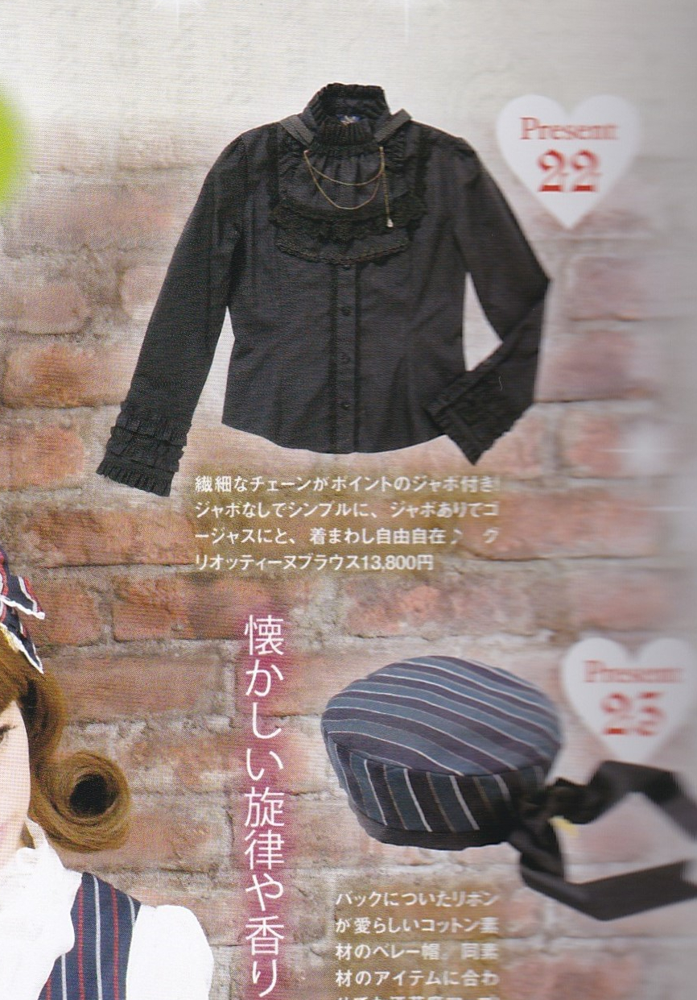

Griottine(s) Blouse
")
|
|
Brand:Alice And The Pirates Web Documentation:
|
|
2025.11.30This blouse seems to return a lot and I couldn't help but get it. I received the 2012 one for under ¥3000. Its bib is lined with a tight, cotton, torchon lace, the classic and true lace for ouji beyond all. The triple-tier jabot and dangling chain are removable and sports a mini acrylic drop gem. Depending on the release, the drop gem is either iridescent or glass-clear (the Griottine blouse being an early nor older release won't determine gem form.) Restored its black coat with a dyejob and its since been the blouse that I reach for the most. |
|
